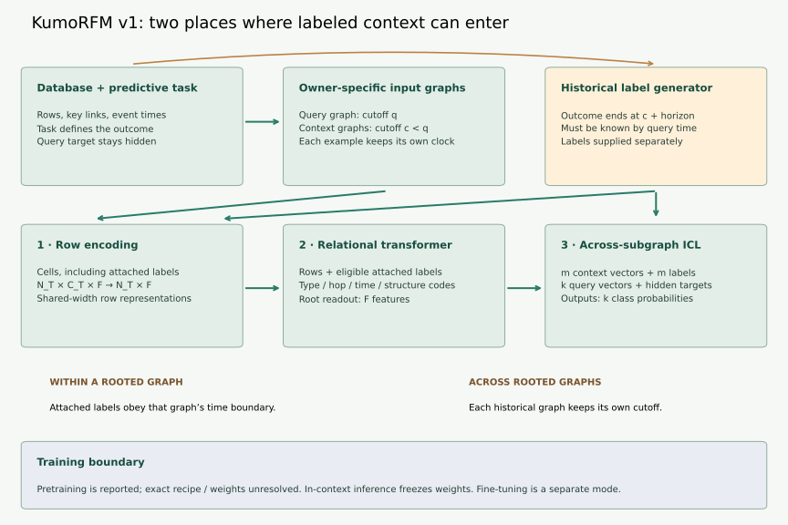
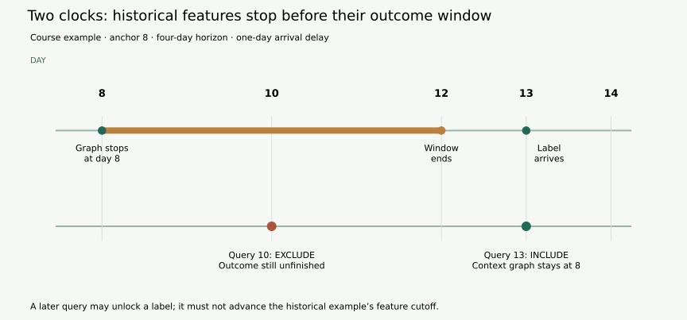

Year 5 · Quarter 1 · Lesson 165
KumoRFM: in-context relational learning
Quick reference · Reproduction contract · Executed audit
See the idea · then trace the details
KumoRFM: condition on a relational task
Draw the labeled examples and query as part of a relational context.
1Declare the prediction task
Database + target entities + prediction time
The task tells the system what to predict and when. Admissible database history is determined relative to that task.
2Supply labeled support
Support examples + query neighborhood
Support labels convey the current task. The relational context can carry information beyond a flattened query row.
3Predict with shared weights
Task-conditioned inference → query output
The system uses a pretrained relational model. This functional overview does not invent undisclosed layer details.
Pause and predict: Does an in-context support example allow using its label before that label is available?
No. Support membership must obey the same availability contract as the rest of the context.
Answer: No. Support membership must obey the same availability contract as the rest of the context.
1 · Change the examples, keep the weights¶
Your tangible win: decide whether a historical label may enter a relational prompt, then explain what evidence would be needed to reproduce a proprietary model's reported score. Allow 20 minutes for the reading and trace; the notebook and written defense extend the session.
In Lesson 164, the selected Griffin transfer protocol called for fine-tuning shared weights on the target task. The full experiment stopped at its budget gate. That adaptation recipe still required optimization for a new task. Here, ask what could change a prediction without updating those weights. The answer is its input: examples can specify the relationship the model should use for this request.
Recall the foundation-model scope lesson: adaptation is broader than gradient descent. For a function prediction = f(weights, query, context), freezing weights leaves query and context free to change. It does not make the prediction constant. Conversely, a program that merely averages context labels has not thereby become a pretrained foundation model.
A context example pairs an input with a known outcome. A query example supplies an input whose outcome must remain hidden. In relational learning, each input may contain a neighborhood of connected rows. The task is specified by which outcome the labels mean: “purchase next week” and “return an order next week” may need the same database but different labels.
2 · Read the actual v1 proposal¶
ICL abbreviates in-context learning: the examples enter the input while the pretrained weights stay fixed. A rooted subgraph is the selected neighborhood around one row being predicted. Read the diagram as two scales of context: information inside one such neighborhood, then information exchanged across labeled examples and queries.
KumoRFM v1 describes semantic-type cell encoding, row representations, a relational graph transformer, and a final transformer over context/query representations. Labels enter both attached context tables within subgraphs and the final ICL stage across subgraphs. Weights remain fixed for in-context inference. Report §2, Eq.1 and §2.3.


How to read the dimensions. N_T counts rows in one table; C_T counts its columns; F is the shared feature width. Cell representations have shape N_T × C_T × F, and row representations have shape N_T × F. Each rooted subgraph yields a vector of width F. Stacking m examples produces m × F. These symbols describe interfaces; the complete numerical configuration and attention masks needed for a faithful implementation are unresolved.
The source reports mixed real/synthetic pretraining and separate fine-tuning support. It does not supply a complete reproducible pretraining recipe here. Our diagram marks that boundary rather than inventing an objective, parameter count, or training corpus. Report §§2–2.4.
Within versus across. A nearby customer's known historical outcome can be available inside a rooted graph. Separately, the representation of another entire rooted graph can be paired with its label in the final context set. These are different information paths. Neither grants permission to reveal the query's target. The notebook implements the input/evaluation contracts below; it does not implement KumoRFM's proprietary encoders or predict F1 outcomes.
3 · An earlier anchor does not guarantee a known label¶
Consider our invented customer query at day 10. A context example is anchored at day 8, and its label is “made a purchase over the next four days.” Its label window finishes on day 12. Even though 8 precedes 10, the answer is not yet known. If the outcome is only recorded on day 13, waiting until day 12 is still insufficient.
Three checks serve different purposes:
| Check | Course rule | Failure prevented |
|---|---|---|
| Earlier context | anchor < query cutoff | The query itself becoming its own example |
| Mature outcome | label-window end ≤ query cutoff | Reading an unfinished future outcome |
| Available outcome | label arrival ≤ query cutoff | Reading a completed but not yet recorded outcome |
The course assumes inclusive availability and strict earlier anchors. These are explicit teaching conventions, not a verified copy of proprietary boundary semantics. Known future schedules and corrected records would require additional availability history.


There is a second cutoff. Once the day-8 example is eligible at day 13, its input graph must still describe what was available at day 8. Its later outcome is supplied separately as a label. Building that example's graph at day 13 would put the answer window into its features. The current query's graph, meanwhile, uses its own day-13 cutoff.
Trace both inputs, not just the label. Add an invented purchase row o9 linked to customer u, occurring and recorded on day 9. The customer's own row was available on day 0. Use one hop. The same purchase is legal in a day-13 query graph and illegal in the day-8 context graph:
| Query day | Day-8 label eligible? | Does o9 enter? |
|---|---|---|
| 10 | No: unfinished, not arrived | Query: yes; context at 8: no |
| 12 | No: finished, not arrived | Query: yes; context at 8: no |
| 13 | Yes | Query: yes; context at 8: no |
The context graph is shown for comparison even when its label is ineligible; that example is then omitted from the prompt. The arrival of a label changes eligibility, not the historical feature boundary. Transfer check: if o9 occurred on day 9 but arrived on day 14, which query graphs above contain it? None. At day 14 it enters the current query graph, while the day-8 graph still excludes it. Event time alone is insufficient.
If attached context labels appear inside a historical input subgraph, they must also be available at that subgraph's cutoff. Our lab keeps labels in a separate explicit context list and does not reconstruct that attachment operator. This is a useful limit to state before treating a local temporal check as whole-system safety.
Try it: move query time from 10 to 12 to 13; then shorten the horizon or change the arrival delay. State which condition changed before inspecting feedback. The baseline remains visible. Query-target changes must not alter the eligible input packet.
4 · Make the contracts executable¶
You implement three small but consequential functions in the notebook. Their outputs feed the complete local audit; they are not isolated fill-in-the-blank exercises.
eligible_context(context, query) requires earlier anchors, mature outcomes and arrived labels. It rejects duplicate (entity, cutoff) keys. For query day 10, the day-2 example with end 5 and arrival 6 is legal; the day-8/end-12/arrival-13 example is not. Two different times for the same entity are distinct examples.
visible_graph(rows, edges, root, cutoff, hops) removes unavailable rows before following edges. In the invented chain u1 — o1 — p1, o1 arrives at 5 and p1 at 8. At cutoff 7, two hops can reach o1 but cannot reach p1. Combining that owner with a later query in a batch must not silently raise its cutoff. The function accepts only IDs and clocks, so injecting a target-label field is rejected. Real graph features need a richer audited schema.
keyed_auc(truth, predictions) aligns complete keys and gives tied positive/negative scores half credit. It rejects missing, extra or duplicated queries, invalid labels and nonfinite scores. Predictions may arrive in any order.
Worked metric. Positives score 0.8 and 0.9; negatives score 0.8 and 0.1. The four positive–negative comparisons contribute 0.5, 1, 1, 1. Their average is 0.875. These four scores were invented to exercise ties; no model produced them. Comparing 0.875 with the paper's score would be meaningless.
Executed author audit: all 144 context cases, 96 graph cases and 24 score orderings completed. Two hidden-label interventions leave inputs identical. Independent checks cover 1,134 tie-aware AUROC cases. These are deterministic synthetic contracts, not measured KumoRFM performance. Full results.
The checks deliberately reject three wrong solutions: accepting every earlier anchor, using a later cutoff for everyone, and returning a constant AUROC. The oracle also enumerates paths and compares score pairs directly, rather than relying solely on the same implementation that generated the report.
5 · A reported comparator is not an empirical ceiling¶
Our selected historical target is Table 2, rel-f1 / driver-dnf, in-context: 82.41 AUROC, or 0.8241 on a 0–1 scale. The fine-tuned column is a different experiment. Original report, Table 2.
Treat this as an author-reported comparator. Calling it a “ceiling” would imply an upper bound that no model can exceed; a published score establishes no such bound. Likewise, “zero-shot” in this setting does not mean “no labeled examples”: distinguish absence of target-task weight updates from absence of context labels.
What prevents historical reproduction here? Matching v1 weights and executable inference, exact test-data identity, context sampling settings and keys, seeds, and prediction artifacts remain unresolved. Our protocol ledger records each gap. A new service response could test today's service, but without an identity link it cannot reproduce this historical table cell.
Retrieval snapshot, 2026-10-01. Source drift is observable: the original report URL redirects to modern documentation; that documentation's paper link points to KumoRFM-2. The previously indexed mirror also returned 404 on direct retrieval. We recovered the original report from an archive and pinned its bytes. The failed repository lookup is an observation about one endpoint, not proof that no model release exists anywhere. Retrieval ledger.
Thus the complete local audit and historical reproduction have different statuses: local contracts complete; historical experiment NOT_RUN; historical fidelity NOT_ESTABLISHED. No paid API evaluation is hidden inside the notebook. The approved budget is $0 cloud/API and at most 30 minutes of aggregate local execution.
6 · Defend one concrete prediction boundary¶
Use the capability note template. Write 400–600 words and a four-row claim/evidence table. Explain the day-8/day-13 example, distinguish the two context paths, and name what must be obtained before running the historical experiment. Propose a matched evaluation without claiming the missing evidence exists.
Before your next session, retrieve from memory: why can fixed weights adapt; why is an earlier timestamp insufficient; why are both entity and cutoff required for scoring? Revisit these questions after three days. Code completion does not score the written defense: learner status remains PENDING_WRITTEN_DEFENSE until reviewed.
Primary reading: Fey et al., original KumoRFM v1 report, Eq.1, §§2.2–2.3 and Table 2. Read the mechanism first; then audit which parts of the result could be independently checked. Lesson 166 moves to RDB-PFN: how synthetic relational tasks train reusable weights, and what released checkpoints let us verify. The optional OpenRFM comparison is not a prerequisite for that lesson.
Ask the teaching agent about any unclear step, or submit your note for a challenge on its assumptions. A useful follow-up is: “Give me a late-arriving-label counterexample and check my context selection.”